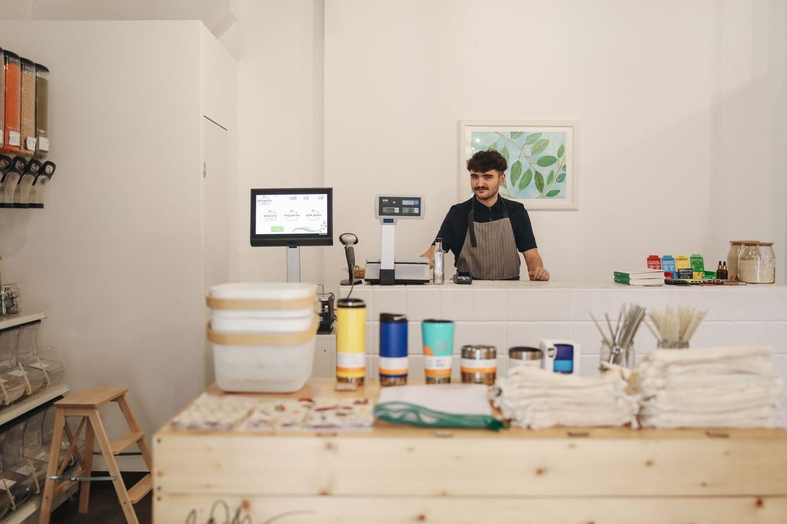

Why your business is not showing up when customers ask Google or ChatGPT
November 26, 2026
Ask ChatGPT who it recommends for your kind of work in your city. If your business is not in the answer, there are usually three or four ordinary reasons, and none of them is that your competitor is better at the job.
Customers have changed how they choose. Some still search Google the old way. A growing number ask an AI tool who to call, and call whoever it names. Both kinds of answers are built from the same raw material: the information about your business that exists on the web. When that information is thin, inconsistent, or hard to confirm, the tools name someone else. This post walks through the four reasons we find most often when we audit a local business, and ends with a ten minute check you can run yourself, free, before you pay anyone to fix anything.

First, check the way a customer would
Do not start by Googling your own business name. You will find yourself, and learn nothing. A customer who does not know you yet searches by need: your service, plus your city. Search that, and look at the map results and the first few names. Then open ChatGPT and ask it the way a person talks: who should I call for this kind of work in my city, and why.
Write down who gets named. If a competitor shows up in both places and you show up in neither, the gap is not your work. It is your information. The four reasons below are where that gap almost always lives.
Reason one: Google and AI cannot confirm the basic facts about your business
Search tools recommend businesses they can verify. That starts with your Google Business Profile: whether it is claimed, complete, and current. Then it is whether the basic facts agree everywhere they appear. Your business name, address, phone number, and hours on your website, your Google profile, and the directories that list you.
When those facts conflict, the tools get cautious. Two different phone numbers, old hours, a profile nobody has claimed: each one is a small reason to name a business whose facts are clean instead. We see this constantly in audits. One business in our own recent sample appeared under seven different phone numbers across its site and listings. The owner had no idea. Customers and search tools both had to guess which number was real, and guessing is where recommendations go to die.
Reason two: your website does not say plainly what you do, for whom, and where
Many local websites were written to look nice, not to be understood. They say the business does quality work at fair prices, and never plainly name the services, the kinds of customers served, or the towns and neighborhoods covered.
A person can read between those lines. A search tool mostly cannot. If your site never says the service in words, a tool answering a question about that service has nothing to connect you to it. If your service area is never named, you are invisible to every search that includes a place. The fix is not clever writing. It is plain sentences: what you do, who it is for, and where you do it, on pages a tool can actually read.
Reason three: almost nothing outside your own website mentions you
Your website is you describing yourself, and every tool knows that. Recommendations get stronger when other places describe you too: directories, the Chamber, local news, partners, and the sites that list businesses in your trade.
A business with no presence beyond its own site is asking Google and ChatGPT to take its word for everything. A competitor with the same website plus a trail of consistent listings and mentions looks confirmed by comparison. This is also the slowest of the four reasons to fix, which is why it is third on the list and not first. The facts and the website come before it.
Reason four: your reviews do not say what you are good at
Reviews do two jobs. The count and the rating tell a tool your business is real and used. The words inside the reviews tell it what you are good at. A profile with a strong rating and reviews that mention specific services by name gives a tool something to repeat when a customer asks for that service.
Two problems show up often. The first is volume and freshness: a handful of reviews, none recent, reads as a business that may not be active. The second is disagreement. When one platform shows one rating and count and your own site shows different numbers, the story your business tells about itself stops agreeing, and tools trust it less. Reviews are not a vanity metric. They are part of the record the recommendation is built from.
A ten minute check you can run yourself
You do not need any tool beyond a phone and a timer.
- Minutes 1 to 2: Google your business name. Open your Google profile and check it the way a stranger would. Is it claimed? Are the hours right? Is the phone number the one you actually answer?
- Minutes 3 to 4: Search your main service plus your city. Do you appear in the map results and the first page? Who does?
- Minutes 5 to 6: Ask ChatGPT who it recommends for your kind of work in your city. Note every name it gives and the reasons it gives for them.
- Minutes 7 to 8: Compare your phone number and hours in three places: your website, your Google profile, and one directory listing. Do they match, exactly?
- Minutes 9 to 10: Read your three most recent reviews, then your top competitor's three most recent. Whose reviews say more about the actual work?
If you found a mismatch, a missing profile, or a competitor named in answers you are absent from, you have found the starting point. That is useful information whether you fix it yourself or hire help.
What to fix first, and what can wait
Fix in this order. First, the facts: claim the profile, correct the phone number, hours, and categories everywhere. It costs nothing and it is what the tools check first. Second, the website: plain pages that name your services and your service area in words. Third, reviews: a steady habit of asking, so the record stays current and specific. Mentions and listings elsewhere come last. They matter, and they work better once the facts they point to are clean.
What can wait is everything else. A redesign, new tools, and AI features all sit on top of this foundation. Built on conflicting facts, they decorate the problem instead of fixing it.
This check is the starting point of Prime's local audit. The audit is free, the findings are walked through on a 15 minute call, and the findings are yours to keep either way. If you ran the check and found something you want a second set of eyes on, start with a conversation through the contact page or call 661-779-5568. The first conversation is free, and we will tell you plainly what we would fix first and what we would leave alone.

About the author
Fernando Rojas is a cofounder of Prime AI Consultants in Santa Clarita, California. Prime helps local businesses, professional firms, and manufacturers find where they lose money and fix it, with AI only where it earns its place. Fernando also works in Talent Connections at The Walt Disney Company in Burbank.